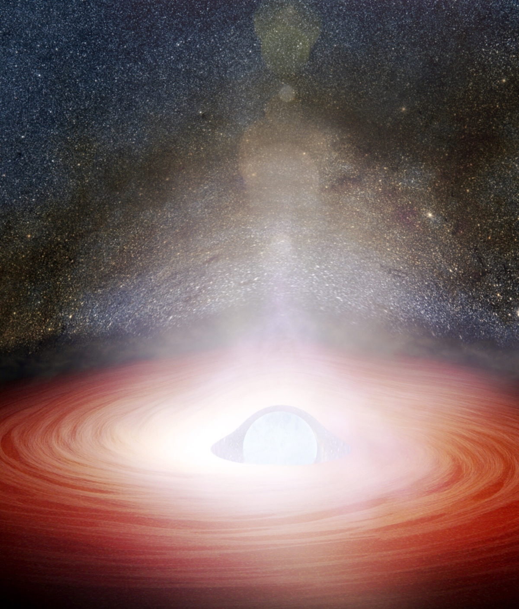
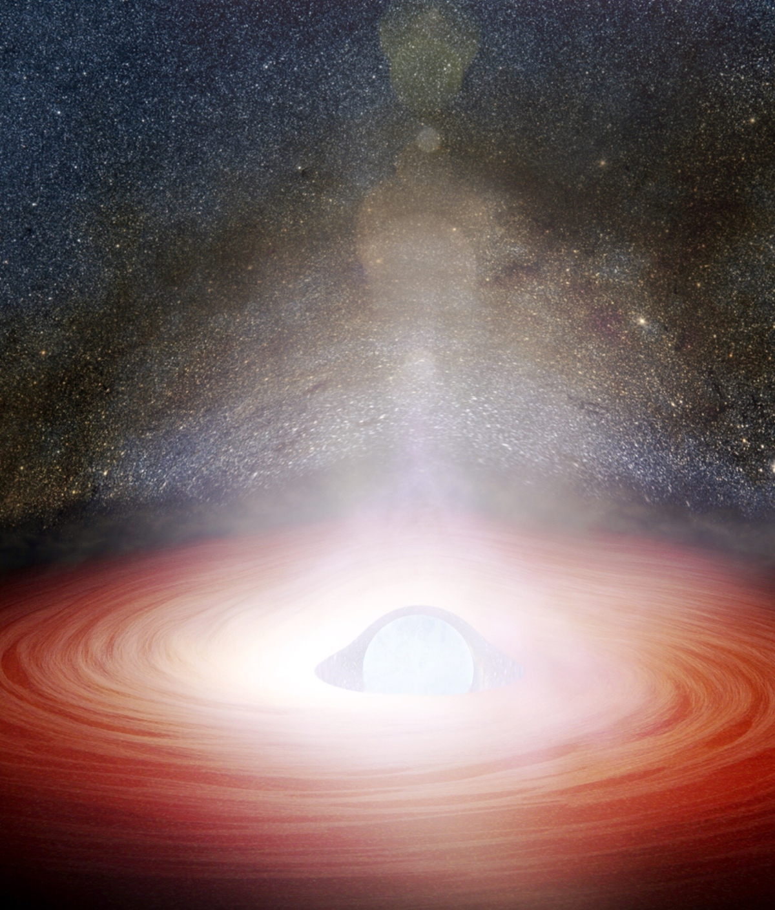
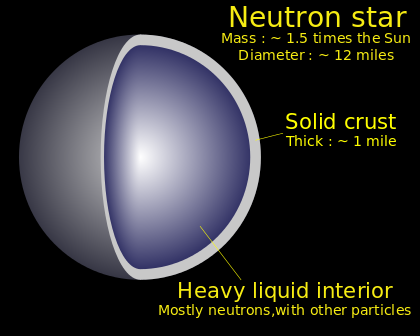
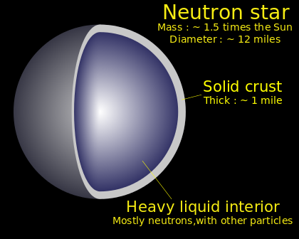

SAO NEUTRON
ĐỊNH NGHĨA
Sao neutron là một dạng trong vài khả năng kết thúc của quá trình tiến hoá sao. Một sao neutron được hình thành từ suy sụp hấp dẫn của nhân của một sao siêu khổng lồ (khối lượng gấp khoảng 10-25 lần mặt trời) sau các vụ nổ siêu tân tinh Kiểu II hay Kiểu Ib hay Kiểu Ic.[cần dẫn nguồn] Các ngôi sao đặc mà có khối lượng nhỏ hơn giới hạn Chandrasekhar (khoảng 1,44 lần khối lượng Mặt Trời) là những sao lùn trắng; nhân của một sao siêu khổng lồ sau khi suy sụp hấp dẫn mà có khối lượng lớn hơn giới hạn Tolman-Oppenheimer-Volkoff (khoảng 1,5 đến 3 lần khối lượng Mặt Trời), sẽ dẫn tới sự hình thành hố đen.[cần dẫn nguồn] Một ngôi sao neutron thông thường có khối lượng nằm giữa giới hạn Chandrasekhar và giới hạn Tolman-Oppenheimer-Volkoff.

Sao neutron là một dạng trong vài khả năng kết thúc của quá trình tiến hoá sao. Một sao neutron được hình thành từ suy sụp hấp dẫn của nhân của một sao siêu khổng lồ (khối lượng gấp khoảng 10-25 lần mặt trời) sau các vụ nổ siêu tân tinh Kiểu II hay Kiểu Ib hay Kiểu Ic.[cần dẫn nguồn] Các ngôi sao đặc mà có khối lượng nhỏ hơn giới hạn Chandrasekhar (khoảng 1,44 lần khối lượng Mặt Trời) là những sao lùn trắng; nhân của một sao siêu khổng lồ sau khi suy sụp hấp dẫn mà có khối lượng lớn hơn giới hạn Tolman-Oppenheimer-Volkoff (khoảng 1,5 đến 3 lần khối lượng Mặt Trời), sẽ dẫn tới sự hình thành hố đen.[cần dẫn nguồn] Một ngôi sao neutron thông thường có khối lượng nằm giữa giới hạn Chandrasekhar và giới hạn Tolman-Oppenheimer-Volkoff.

 ĐẶC ĐIỂM
ĐẶC ĐIỂM Trong khi có khối lượng từ 1,35 đến 2,1 lần khối lượng Mặt Trời, các sao neutron lại có bán kính tương ứng là từ 10 đến 20 kilômét (các sao neutron có bán kính nhỏ hơn thì có khối lượng lớn hơn) — nhỏ hơn Mặt Trời từ 30.000 đến 70.000 lần. Vì thế, các ngôi sao neutron có mật độ 8×1013 đến 2×1015 gam/cm³ (80 triệu tấn đến 2 tỉ tấn/cm³), tương đương với mật độ của một hạt nhân nguyên tử.[3] Mật độ lớn của ngôi sao neutron cũng làm cho nó có sức hút bề mặt từ 2×1011 đến 3×1012 (từ hai trăm tỉ đến ba nghìn tỉ) lần mạnh hơn sức hút của Trái Đất. Có thể hình dung nếu ta đội một chiếc mũ trên đầu, ở hành tinh xanh của chúng ta nó chỉ nặng 500 g thì trên sao Neutron một chiếc mũ có cùng kích thước sẽ nặng một trăm triệu tấn! Trong khi đó cả con tàu Titanic và các hành khách trên đó chỉ nặng xấp xỉ một trăm nghìn tấn-nghĩa là chiếc mũ kia nặng bằng cả hàng nghìn con tàu. Chiếc mũ sẽ nhanh chóng đè bẹp chúng ta thành một lớp mỏng. Hoặc ví dụ nếu có một ngôi sao neutron ngay cạnh Trái Đất thì đó là điểm đánh dấu sự kết thúc hủy diệt của cả nhân loại (nên có thể nói sao neutron là một con quái vật của vũ trụ) không ai có thể sống sót. Một trong những cách đo lực hấp dẫn là tốc độ thoát, tốc độ cần thiết để một vật thể thoát khỏi trường hấp dẫn để bay vào khoảng không vô tận. Đối với một ngôi sao neutron, tốc độ thoát như vậy thường lớn hơn 150.000 km/s (với Trái Đất giá trị này vào khoảng 11,2 km/s), khoảng ½ vận tốc ánh sáng. Trái lại, một vật thể rơi vào bề mặt của một ngôi sao neutron sẽ lao vào ngôi sao với tốc độ 150.000 km/s. Nói theo cách dễ hiểu hơn, nếu một người bình thường lao vào một ngôi sao neutron, anh ta sẽ va chạm với bề mặt sao neutron với một lượng năng lượng khoảng 200 megaton (gấp bốn lần năng lượng do Tsar Bomba, vũ khí hạt nhân lớn nhất từng được chế tạo sản sinh ra).
LỊCH SỬ
Năm 1932, James Chadwick khám phá neutron là một hạt cơ bản,[1] và được trao Giải Nobel Vật lý năm 1935. Năm 1933, Walter Baade và Fritz Zwicky đưa ra giả thuyết về sự tồn tại của sao neutron,[2] chỉ một năm sau khi Chadwick khám phá ra neutron. Trong khi tìm cách giải thích nguồn gốc một siêu tân tinh, họ đã cho rằng sao neutron được hình thành trong một siêu tân tinh. Các siêu tân tinh thường bất ngờ xuất hiện như những ngôi sao mới trên bầu trời, độ sáng quang học của chúng có thể lớn hơn toàn bộ ngân hà trong nhiều ngày tới nhiều tuần. Baade và Zwicky khi ấy đã đưa ra giả thuyết rằng sự giải phóng thế năng trọng trường của các sao neutron đã tạo ra năng lượng cho các siêu tân tinh: "Trong quá trình hình thành siêu tân tinh, vật chất chuyển hóa thành năng lượng tỏa ra bên ngoài". Lấy ví dụ, nếu phần trung tâm của một ngôi sao lớn trước khi nó sụp đổ có khối lượng 3 lần khối lượng Mặt Trời, thì một ngôi sao neutron với khối lượng cỡ hai lần Mặt Trời có thể được hình thành sau khi sụp đổ. Phần năng lượng E tỏa ra bên ngoài thu được từ chênh lệch khối lượng, theo công thức E=mc², tương đương với khối lượng Mặt Trời. Chính năng lượng này đã được cung cấp cho siêu tân tinh. Năm 1967, Jocelyn Bell và Anthony Hewish khám phá ra các xung radio từ một pulsar, sau này được coi là phát ra từ một ngôi sao neutron biệt lập, quay. Nguồn năng lượng là năng lượng quay của sao neutron. Đa số các ngôi sao neutron từng được biết tới đều ở dạng này. Năm 1971, Riccardo Giacconi, Herbert Gursky, Ed Kellogg, R. Levinson, E. Schreier, và H. Tananbaum khám phá ra các xung 4.8 giây ở một nguồn tia X tại chòm sao Centaurus, Cen X-3. Họ cho rằng nó xuất phát từ một ngôi sao neutron nóng đang quay trên một quỹ đạo quanh ngôi sao khác. Nguồn năng lượng là năng lượng hấp dẫn và có được nhờ số lượng khí rơi vào bề mặt sao neutron. 
Năm 1932, James Chadwick khám phá neutron là một hạt cơ bản,[1] và được trao Giải Nobel Vật lý năm 1935. Năm 1933, Walter Baade và Fritz Zwicky đưa ra giả thuyết về sự tồn tại của sao neutron,[2] chỉ một năm sau khi Chadwick khám phá ra neutron. Trong khi tìm cách giải thích nguồn gốc một siêu tân tinh, họ đã cho rằng sao neutron được hình thành trong một siêu tân tinh. Các siêu tân tinh thường bất ngờ xuất hiện như những ngôi sao mới trên bầu trời, độ sáng quang học của chúng có thể lớn hơn toàn bộ ngân hà trong nhiều ngày tới nhiều tuần. Baade và Zwicky khi ấy đã đưa ra giả thuyết rằng sự giải phóng thế năng trọng trường của các sao neutron đã tạo ra năng lượng cho các siêu tân tinh: "Trong quá trình hình thành siêu tân tinh, vật chất chuyển hóa thành năng lượng tỏa ra bên ngoài". Lấy ví dụ, nếu phần trung tâm của một ngôi sao lớn trước khi nó sụp đổ có khối lượng 3 lần khối lượng Mặt Trời, thì một ngôi sao neutron với khối lượng cỡ hai lần Mặt Trời có thể được hình thành sau khi sụp đổ. Phần năng lượng E tỏa ra bên ngoài thu được từ chênh lệch khối lượng, theo công thức E=mc², tương đương với khối lượng Mặt Trời. Chính năng lượng này đã được cung cấp cho siêu tân tinh. Năm 1967, Jocelyn Bell và Anthony Hewish khám phá ra các xung radio từ một pulsar, sau này được coi là phát ra từ một ngôi sao neutron biệt lập, quay. Nguồn năng lượng là năng lượng quay của sao neutron. Đa số các ngôi sao neutron từng được biết tới đều ở dạng này. Năm 1971, Riccardo Giacconi, Herbert Gursky, Ed Kellogg, R. Levinson, E. Schreier, và H. Tananbaum khám phá ra các xung 4.8 giây ở một nguồn tia X tại chòm sao Centaurus, Cen X-3. Họ cho rằng nó xuất phát từ một ngôi sao neutron nóng đang quay trên một quỹ đạo quanh ngôi sao khác. Nguồn năng lượng là năng lượng hấp dẫn và có được nhờ số lượng khí rơi vào bề mặt sao neutron. 